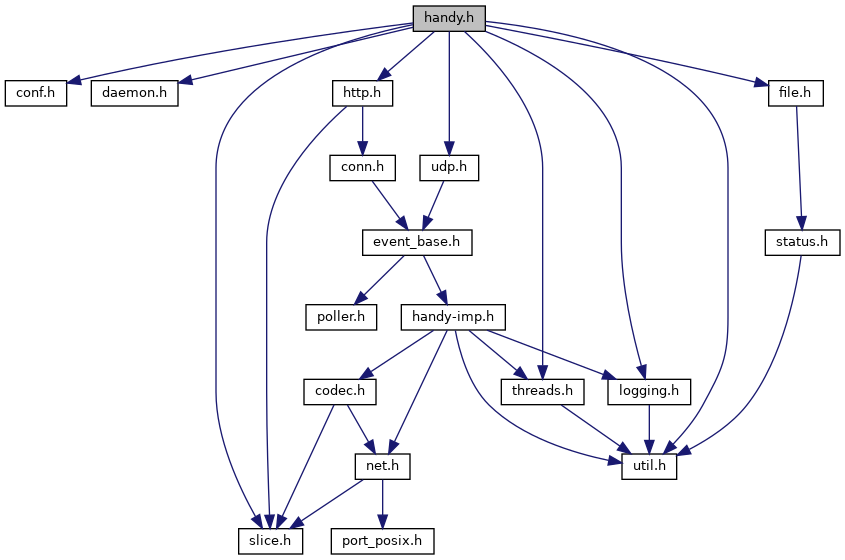
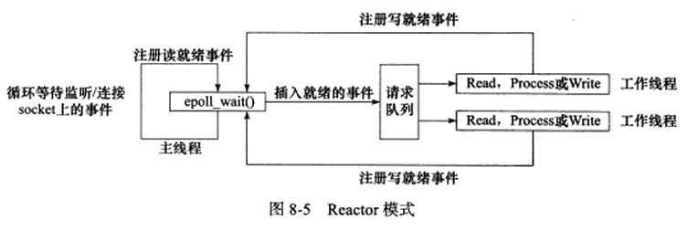
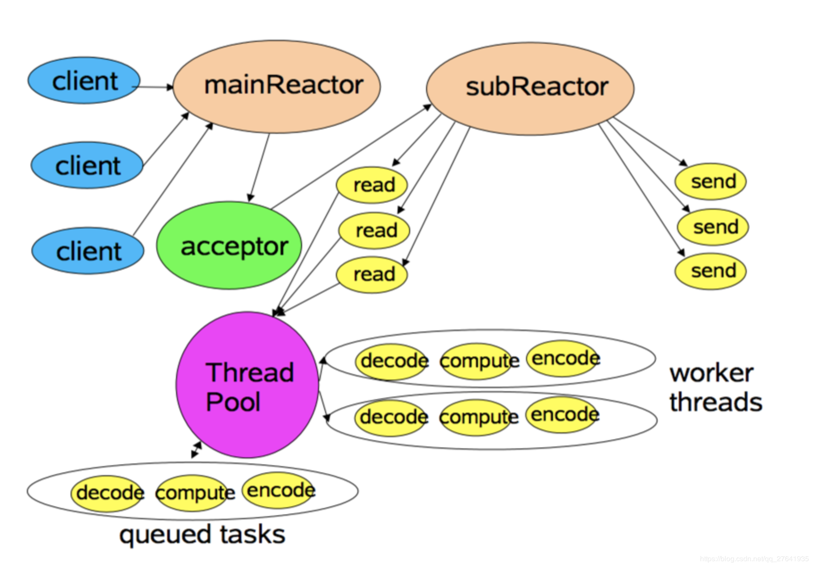

handy源码分析
Handy网络库分析
最近想学一下Linux的网络编程，于是想先阅读一些网络库，所以这篇博客可能会有一些比较基本的知识点。
直接开始，我们先来看看利用Doxygen生成的Include依赖关系图

我们就按从下往上来分析一下各个头文件所实现的功能
slice.h
定义字符串切片类（包含front() / back() / begin() / end() 等类似容器的操作，但实际的实现是char*）以及切片的一些操作（返回第一个词，返回第一行，返回前n个字符等等）
port_posix.h
用于解决主机字节序到网络字节序的转换，根据 OS_LINUX / OS_MACOSX 实现不同的getHostByName
util.h
这里noncopyable是通过将拷贝构造函数和拷贝赋值运算符声明为禁止使用(=delete)实现
这样实现的好处：
- 在c++11之前实现该功能需要将这两个函数设为private，但依然无法避免成员函数和友元函数的使用
- 通过更少/更明确的代码实现，且可复用(从noncopyable类派生)
该类的作用：
- 防止对象被拷贝。尤其是在涉及到文件操作/网络连接的类中，资源的释放/关闭可能会出现问题
2
3
4
5
6
7
8
struct noncopyable
{
noncopyable() = default;
noncopyable(const noncopyable&) = delete;
noncopyable& operator=(const noncopyable&) = delete;
};
util类则包含
-
格式化输出string
进行两次尝试：
第1次尝试：
申请char[500]的栈内存，va_start获取可变参数列表，通过vsnprintf()得到格式化后的字符串，判断返回大小是否超出限制，未超出结束尝试并返回，超出则进行第二次尝试
第2次尝试：
申请char[30000]的堆内存，并且由unique_ptr管理(销毁)，通过vsnprintf()得到格式化后的字符串，判断返回大小是否超出限制，未超出结束尝试并返回，超出则截断，将字符串最后一字节设为结束字符‘\0’
-
基础的时间函数（std::chrono库）
-
atoi() ---- 将字符串转换为整数，函数内部通过strtol()实现
-
更改(添加)文件描述符flag（fcntl）
ExitCaller类继承于noncopyable，只有一个私有成员std::function<void()> functor_，即一个无参数返回int的可调用对象，并且在析构时进行调用执行。当实例为局部变量时，作用与golang的defer类似
net.h
net类包含一些设置函数
-
setNonBlock()设置文件的 阻塞/非阻塞IO
-
setReuseAddr() / setReusePort() / setNoDelay() 设置套接字的属性
SO_REUSEADDR允许 绑定一个正处于TIME_WAIT中的本地地址 / 通配符IP(INADDR_ANY)地址冲突SO_REUSEPORT允许多个套接字绑定到同一地址端口组合(所有套接字必须都设置了SO_REUSEPORT)TCP_NODELAY关闭Nagle缓存算法，允许小包的发送(适合延时敏感且数据量较小的情况)
Ip4Addr类则是对sockaddr_in进行了一些简单的封装，提供一些常用的函数(format/getter/validate)
Buffer类是连续的动态伸缩的内存空间，用于缓存
内存空间大小由私有成员变量
char *buf_内存地址起始地址 / size_t b_正在使用内存空间（缓存数据但未使用）的起始地址相对buf的偏移量 / size_t e_正在使用内存空间的结束地址 + 1数据单元地址相对buf的偏移量 / size_t cap_已分配空间大小 / size_t exp_建议/期望分配大小
-
添加数据：先调用
allocRoom(len)分配足够大小空间，然后memcpy()拷贝数据 -
分配空间：调用
makeRoom(len)获得所分配空间的首地址在分配过程中，如果内存空间足够(
e_ + len <= cap_)，无需操作如果内存尾部空间不足
- 判断当前所需要使用的内存是否小于已分配的一半(
size() + len < cap_/2)，是则将有效数据移动到起始位置buf_ - 调用
expand(len)重新分配一块内存，内存大小为max(exp_, max(2 * cap_, size() + len))
- 判断当前所需要使用的内存是否小于已分配的一半(
-
获取数据：
consume(size_t len)直接b_ += len，所以使用时需保证len的大小正确
codec.h
TCP的粘包/拆包问题：TCP是字节流协议，消息之间没有边界
一般的处理：
- 发送定长包。如果每个消息的大小都是一样的，那么在接收对等方只要累计接收数据，直到数据等于一个定长的数值就将它作为一个消息。
- 包尾加上\r\n标记。FTP协议正是这么做的。但问题在于如果数据正文中也含有\r\n，则会误判为消息的边界。
- 包头加上包体长度。包头是定长的4个字节，说明了包体的长度。接收对等方先接收包体长度，依据包体长度来接收包体。
- 使用更加复杂的应用层协议
CodecBase类 就是用来处理这些问题，其派生类LineCodec采用第二种方案，LengthCodec采用第三种方案
LengthCodec类的具体编码：“mBdt”（四个字节）+ 消息长度（四个字节）+消息
threads.h
SafeQueue类
要做到线程安全，我们需要利用锁。一般在封装线程安全的类时，我们会直接声明一个mutex成员变量，但是该类是通过私有继承mutex类实现，所以上锁的时候直接传入(*this)：lock_guard<mutex> lk(*this)
push()任务时直接上锁，然后将任务添加到链表中，调用notify_one()唤醒一个等待条件变量ready_的线程
wait_ready()使用条件变量阻塞线程，直到 超时 / 队列中不为空(有任务) / 退出
pop_wait()调用wait_ready()，返回空任务(退出/超时)或者队列头任务(队列不为空)
ThreadPool类
构造一个最大等待任务数量为taskCapacity，线程数量为thread的线程池，当线程启动时，遍历线程集合，对于每一个线程，创建一个新的线程执行pop_wait()获取任务并执行，然后交换，即将新线程替换旧线程
logging.h
定义了8个日志等级
1 | enum LogLevel { LFATAL = 0, LERROR, LUERR, LWARN, LINFO, LDEBUG, LTRACE, LALL }; |
Logger类是通过getLogger()获取一个静态单例（c++11保证局部静态变量的初始化是线程安全的），功能
-
可以绝对
setLogLevel()/ 相对adjustLogLevel()设置 / 获取getLogLevel()当前的日志输出等级 -
自定义设置日志文件，打开方式
O_APPEND将写入追加到文件的尾端O_CREAT不存在则自动创建，权限为#define DEFFILEMODE (S_IRUSR|S_IWUSR|S_IRGRP|S_IWGRP|S_IROTH|S_IWOTH)即 User/Group/Others可读可写O_WRONLY只写O_CLOEXEC设置文件描述符close-on-exec，即当fork()的子进程成功调用exec()类函数时，会自动关闭该文件描述符，避免泄露给子进程
修改成员函数的时候使用的是
dup2()，避免close()+dup()两个函数会受到竞争条件的影响：比如在两个函数之间，成员函数被赋值为另一个fd -
设置日志周期
rotateInterval_- 如果当前时间与当前日志文件创建时间在同一周期内，无需新建日志文件
- 否则，保存并重命名为 当前年月日时分
-
写入日志
logv(int level, const char *file, int line, const char *func, const char *fmt...)- 如果写入日志等级高于当前日志等级，退出
- 检查是否开启新的日志周期（重命名）
- 写入详细的时间 + tid + 发生的文件/位置 + 事件内容 + ‘\n’
status.h
表示文件操作后的状态
表示格式：
state_[0…3] == length of state_
state_[4…7] == code
state_[8…] == message
file.h
file类中包含了一些文件io的静态成员函数，返回Status类
-
getContent(const string &filename, string &cont)：将文件内容读(append)到字符串中 -
writeContent(const string &filename, const string &cont)：截断并从头往文件写入字符串中内容 -
createDir(const string &name)/deleteDir(const string &name)：创建/删除文件目录 -
getChildren(const string &dir, vector<string> *result)：通过readdir()获取遍历目录文件信息，然后它们的文件名push_back(d_name)到*result -
getFileSize((const string &fname, uint64_t *size))：通过调用stat(const char *path, struct stat *buf)获取文件大小，并将*size赋值为文件大小buf.st_size -
deleteFile(const string &fname)：通过调用unlink(const char *pathname)删除文件unlink() 从文件系统删除一个名字.
- 如果这个名字是指向文件的最后一个链接并且该文件当前没有被某进程打开，则删除该文件
- 如果这个名字是指向文件的最后一个链接并且该文件正在被某进程打开，则等待指向该文件的最后一个文件描述符被关闭时删除该文件
- 如果这个名字指向一个软链接，则删除该软连接
- 如果名称指向一个socket、fifo或设备，则删除其名称，但打开该对象的进程可以继续使用它。
-
调用
writeContent(tmpName,cont)往tmpName文件写入内容成功后，调用renameFile(tmpName,name)重命名
handy_imp.h
AutoContext类通过模板类实现对传入类的内存管理，自动（第一次访问时）new和（析构时）delete
poller.h
结合event_base一起看
基于PollerBase抽象类，根据Linux和MacOS不同平台派生类，实现了对epoll的封装
epoll
epoll把用户关心的文件描述符上的事件放在内核里的一个事件表中，从而无需像select和poll那样每次调用都要重复传入文件描述符集或事件集。但epoll需要使用一个额外的文件描述符来唯一标识内核中的这个事件表
这里我们先来看看epoll的几个函数
-
int epoll_create(int size)：用来创建上述的文件描述符。size参数现在不起作用，只是给内核一个提示，告诉它事件表需要多大 -
int epoll_ctl(int epfd, int op, int fd, struct epoll_event *event)：fd是要操作的文件描述符，op参数则指定操作类型，有如下3种：EPOLL_CTL_ADD：往事件表种注册fd上的事件EPOLL_CTL_MOD：修改fd上的注册事件EPOLL_CTL_DEL：删除fd上的注册事件
event参数指定事件，epoll_event结构体定义了：events成员描述事件类型，data成员存储用户数据 -
int epoll_wait(int epfd, struct epoll_event* events, int maxevents, int timeout)：epoll_wait()在一段超时时间内等待一组文件描述符上的事件，timeout指定超时值，单位是ms，maxevents指定最多监听多少个事件epoll_wait()如果检测到事件，就将所有就绪的事件从内核事件表中复制它的第二个参数events指向的数组中
Level Trigger
当
epoll_wait()检测到有事件发生并将其通知应用程序后，应用程序可以不立即处理该事件。当应用程序下一次调用epoll_wait()时，此事件仍然会被通知，直到该事件被处理
1 | void lt(epoll_event* events, int number, int epollfd, int listenfd){ |
Edge Trigger
当
epoll_wait()检测到有事件发生并将其通知应用程序后，应用程序必须立即处理该事件，因为后续的epoll_wait()不再向应用程序通知该事件
1 | void et(epoll_event* events, int number, int epollfd, int listenfd){ |
event_base.h
事件的到来是随机的、异步的。我们无法预知程序何时收到一个客户连接请求 / 暂停信号。所以程序需要循环等待并处理事件，这就是事件循环。在事件循环中，等待事件一般使用I/O复用技术实现。
将系统支持的各种I/O复用系统调用封装成统一的接口，称为事件多路分发器，一般包含三个函数：等待事件(select/poll/epoll_wait)，添加事件，删除事件。
事件处理器执行事件对应的业务逻辑，通常包含一个或多个回调函数，这些回调函数在事件循环中被执行。
TimerRepeatable 类是一个带有编号，回调函数的定时器，通过其中的 at 过期时间，interval定时周期控制
事件循环：EventBase::loop() -> EventsImp::loop() -> poller::loop_once()
事件分发器：EventBase::safeCall() -> EventsImp::safeCall() ->
EventsBase类是对 EventsImp 类再进一层封装，简化操作，方便多线程事件派发器MultiBase的实现
EventsImp 类成员
1 | EventBase *base_; //所属的事件分发器 |
EventBase 类只有一个事件分发器，只在主线程上运行，所有的事件处理也是在主线程上
EventBase 类只有一个事件分发器，只在主线程上运行，所有的事件处理也是在主线程上
MultiBase类拥有多个事件分发器EventBase ，在执行loop()的时候，为第0 ~ n-1个事件分发器创建一个线程执行EventBase::loop()，第n个事件分发器（主Reactor，需处理accept）则在主线程上执行，所有的事件处理在各自的线程上
conn.h
分别使用TcpConn记录访问的tcp连接，TcpServer(包含事件分发器)处理具体的事件
enable_shared_from_this<>和shared_from_this()从
enable_shared_from_this派生的对象可以使用成员函数中的shared_from_this方法创建一个shared_ptr所有者，与现有shared_ptr所有者共享实例所有权。
否则，如果通过this创建新的shared_ptr，则它与现有的shared_ptr所有者不同，这可能导致无效引用或导致该对象被删除多次。
先来看看TcpConn类的一些成员函数：
1 | //用Channel封装套接字 并 设置回调函数 |
输入/输出缓冲区的设置：
输入/输出缓冲区的设置：
1 | struct TcpServer : private noncopyable { |
还有一个半同步半异步服务器HSHA，利用线程池，为每一个消息处理都分配一个worker线程，即同步处理请求，异步管理IO
udp.h
参考conn.h
http.h
HTTP消息是服务器和客户端之间交换数据的方式。有两种类型的消息：客户端发送的用于触发服务器上某个操作的请求和来自服务器的响应。


这里对这两种消息类型进行了抽象HttpMsg和实现HttpRequest / HttpResponse
1 | struct HttpMsg { |
HTTP Request Target Request Target / HTTP Message - MDN web docs
HTTP Request Target Request Target / HTTP Message - MDN web docs
origin-form
absolute-path [ “?” query ]
the most common form, and it is used with
GET,POST,HEAD, andOPTIONSmethods.e.g. GET /background.png HTTP/1.0 HEAD /test.html?query=alibaba HTTP/1.1
absolute-form
absolute-URI
e.g. GET http://developer.mozilla.org/en-US/docs/Web/HTTP/Messages HTTP/1.1
authority-form
The authority component of a URL, consisting of the domain name and optionally the port (prefixed by a ‘:’), is called the authority form. It is only used with CONNECT when setting up an HTTP tunnel.
e.g. CONNECT developer.mozilla.org:80 HTTP/1.1
asterisk-form
Used with
OPTIONS, representing the server as a whole.e.g. OPTIONS * HTTP/1.1
1 | struct HttpRequest : public HttpMsg { |
HttpResponse类和HttpRequest只有以下区别（不考虑HTTP1.1和2的区别(chunked)）：
-
HTTP response的起始行叫做
status line，包含协议版本/状态码/状态的简单描述e.g. HTTP/1.1 404 Not Found
-
与Request Header相对应的是Response Header，提供有关服务器的其他信息
e.g. Vary / Accept-Ranges
所以解码只需通过HttpMsg继承的tryDecode_(Slice buf, bool copyBody, Slice *line1)完成，然后单独处理line1
HttpConnPtr类是本质上是一条Tcp连接，进一步封装主要是加入了HttpRequest，HttpResponse的处理
1 | struct HttpConnPtr { |
conf.h
Conf类是对INI配置文件读写的封装
1 | // 0 success |
daemon.h
创建守护进程一般有以下几步
-
fork()父进程，让父进程退出，则孤儿进程会成为init的子进程 -
调用
setsid()创建新会话，当前进程成为 新会话&新进程组 的领导进程，没有控制tty在Unix系统中，进程在进程组内运行，因此在一个进程组中的所有进程被视为单个实体，子进程也会继承父进程的进程组和会话。而服务器不应从启动它的进程中接收信号，因此它必须将自己与控制tty分离，所以我们需要通过
setsid()进一步独立进程 -
大多数服务器以超级用户身份运行，出于安全原因，它们应保护自己创建的文件。
umask()设置用户掩码将防止在创建文件时可能出现的不安全文件特权。 -
服务器应在已知目录中运行
chdir("/servers/") -
大多数服务一次只需要运行一个服务器副本。因此我们通过文件锁定
loackf来保持单例。服务器的第一个实例将锁定文件，以便其他实例了解实例已在运行。 如果服务器终止，锁将自动释放，以便新实例可以运行。 -
进程可能会从用户或进程接收信号，因此最好抓住这些信号并相应地执行操作。 子进程终止时会发送SIGCHLD信号，服务器进程必须忽略或处理这些信号。
-
日志消息的处理 -> 标准IO / 写入文件 / 系统日志守护进程syslogd
stat-svr.h
对HttpServer添加query 参数stat，方便外部的工具查看应用程序的状态
总结
EventBases负责线程与EventBase（持有poller）之间的联系，底层的poller（使用epoll水平触发） 检测到POLLIN / POLLOUT读写事件时，调用事件对应 Channel 的 handleRead() / handleWrite() 执行 I/O，具体的操作取决于上层的协议，如TcpCoon 所持有的套接字的Channel的就会调用TcpConn::handleRead()，然后一次性把 socket 里的数据读完（从操作系统 buffer 搬到应用层 buffer），否则会反复触发 POLLIN 事件，造成 busy-loop 。对于数据不完整的情况，则数据依然存放在应用层buffer中直到构成完整的消息，因此每个 TcpConn 都需配置 input buffer，同理也需要output buffer，并且程序只负责调用send往应用层buffer中添加发送内容，然后由库接手，为 socket 注册 POLLOUT 事件，只要socket可写就将数据从应用层buffer搬到操作系统buffer，直到写完后停止POLLOUT

线程模型：
每个线程最多有一个 EventBase，每个TcpConn 所在的线程由其所属的 EventBase （TcpServer通过调用allocBase()分配）决定
所有对IO和buffer的读写，都应该在IO线程中完成
单线程：同步处理请求，同步管理IO，全部在主线程完成，不需要考虑线程安全
多线程：
-
MultiBase —— 通过vector + atomic<int>实现对
EventBase的分配（Round Robin）（类似于多个单线程模型，只是需要考虑线程安全）
一个reactor对应一个
EventBase。主Reactor只有一个，只负责监听新的连接，accept后将这个连接分配到子Reactor上，子Reactor可以有多个，这样可以分摊一个EventBase的压力。
-
HSHA服务器（同步处理请求，异步管理IO）则主要是实现了上图下部的
Thread Pool的例子，可以设置消息模式时，将每一个读写任务添加到queued tasks中即业务线程池，适用于阻塞型或者耗时型的任务，尽可能不影响每一个EventBase::loop()